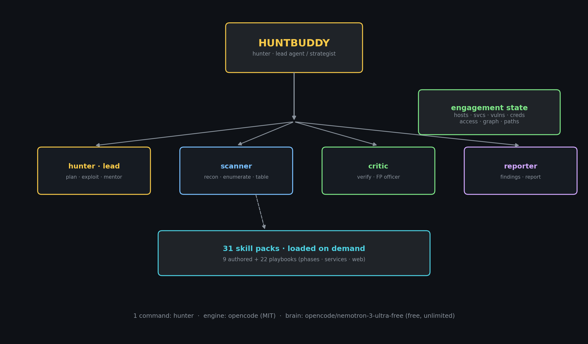
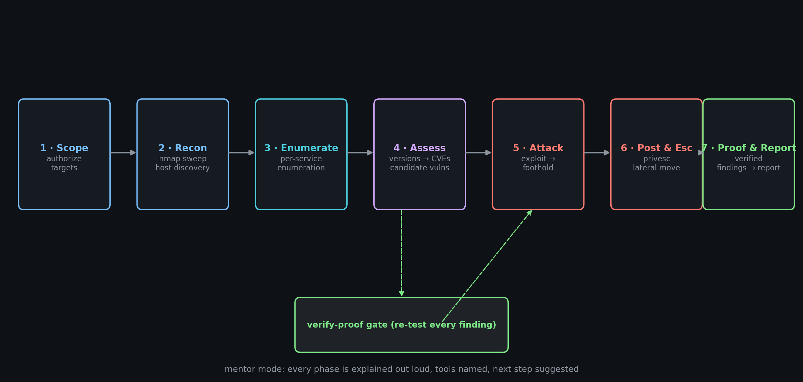
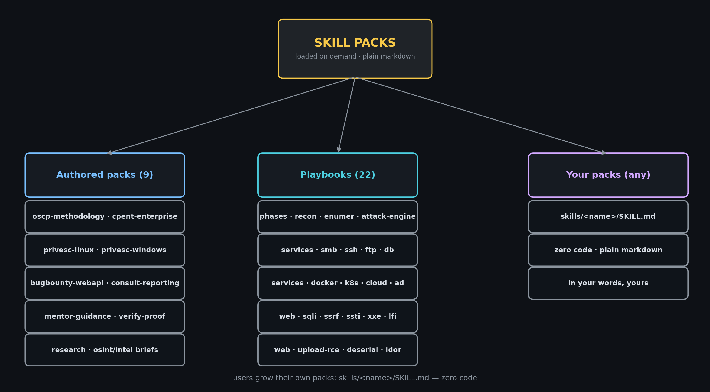
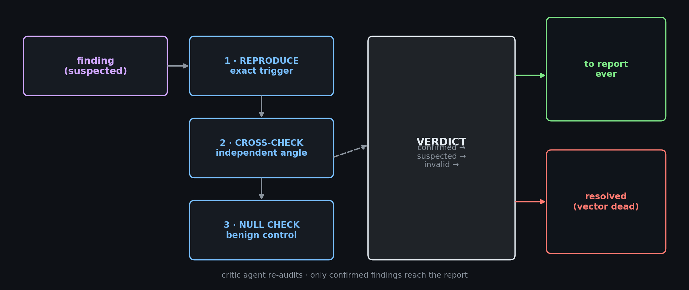
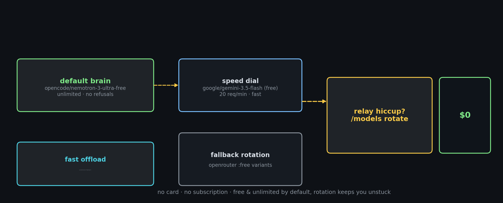

Huntbuddy is a self-hosted AI agent that lives in your terminal and works like an experienced penetration tester. Run hunter; describe a target and a goal; it takes it from there — map the surface, enumerate services, assess vulnerabilities, exploit, escalate, verify, report.
hunter — Huntbuddy, an AI pentest partner (runs on the opencode engine inside ~/huntbuddy).
Usage:
hunter start the interactive chat (TUI)
hunter --help | -h | help this help
hunter --version | -v engine version
hunter status check relay slot, opencode procs, skills
hunter whoami who Hunter is (identity card)
hunter "<message>" run a one-off message
hunter run "<message>" same, explicit; times out (240s) instead of hanging
hunter auth manage AI providers & login
hunter models [provider] list available models
hunter skills list loaded skill packs
hunter debug config show resolved configuration
hunter session|stats|export|import|mcp|upgrade engine utilities
Two ideas power Huntbuddy: a team of agents and skills that load on demand. The hunter agent plans the engagement and dispatches specialist subagents (scanner, critic, reporter); expert playbooks are only pulled into context when a service or phase matches.


| Feature | What it does for you |
|---|---|
| Mentor mode | Explains every tool run, interprets output in plain language, teaches the "why", always proposes the next step. |
| Verify-before-trust | The critic re-tests every suspected finding (reproduce → cross-check → benign control) before it can be confirmed or reach the report. |
| 37 skill packs | 12 authored methodology packs + 25 service/web/phase playbooks, all loaded on demand. |
| No-refusal | Authorized scanning/recon of your own networks and labs is never refused or lectured about — by explicit policy and a permissive brain. |
| Free & unlimited | Runs on OpenCode Zen free models. No API keys, no accounts, no per-minute quota walls that force you to stop mid-task. |
| One command | hunter from any folder after a single install. That's the whole product interface. |
huntbuddy/ ├─ opencode.jsonc the Huntbuddy config (brain, agents, permissions, skills) ├─ HUNTBUDDY.md brand + operator rules loaded into every session ├─ skills/ 12 authored methodology packs (mentor, oscp, cpent, research, ...) ├─ playbooks/ 25 service/web/phase playbooks (SMB, AD, SQLi, SSRF, XSS, K8s, ...) ├─ tools/helpers/ hb-state.sh (state machine) · hb-scope.sh · hb-report.sh · hb-engage.sh ├─ config/ free-models.md (model rotation playbook) ├─ engagements/ one ISOLATED world per engagement; state.json + findings.md + .hb-scope ├─ .opencode/ custom slash-commands (/guide /verify /learn) ├─ docs/ this manual · diagrams · samples ├─ start.sh · README.md · LICENSE · NOTICE · hunter (in ~/.local/bin)
hunter — Huntbuddy, an AI pentest partner (runs on the opencode engine inside ~/huntbuddy).
Usage:
hunter start the interactive chat (TUI)
hunter --help | -h | help this help
hunter --version | -v engine version
hunter status check relay slot, opencode procs, skills
hunter whoami who Hunter is (identity card)
hunter "<message>" run a one-off message
hunter run "<message>" same, explicit; times out (240s) instead of hanging
hunter auth manage AI providers & login
hunter models [provider] list available models
hunter skills list loaded skill packs
hunter debug config show resolved configuration
hunter session|stats|export|import|mcp|upgrade engine utilities
> cd ~ && hunter
████ ████ ... HUNTBUDDY — AI pentest partner · recon to report
(colors: amber on dark)
> hunter · nemotron-3-ultra-free
$ ifconfig
eth0: flags=4163<UP,BROADCAST,RUNNING,MULTICAST> mtu 1500
inet 192.168.1.9 netmask 255.255.255.0 broadcast 192.168.1.255
ether 00:0c:29:ef:17:42 (Ethernet)
lo: flags=73<UP,LOOPBACK,RUNNING> mtu 65536
inet 127.0.0.1 netmask 255.0.0.0 (Loopback)
Your local IP is 192.168.1.9. Ready for the ping sweep of 192.168.1.0/24?
| Command | What it does |
|---|---|
| /guide | MentorExplain-everything mode — names each tool, teaches the "why", ends with a Next: step. |
| /verify | FP filterRuns the false-positive sweep over suspected findings. Verdicts: confirmed / suspected / invalid. |
| /learn <topic> | TeachingOSCP-instructor explanation of a technique/tool, with commands and a practice drill. |
| /models | Show/switch the free brains instantly (nemotron → gemini → lightning → …). |
| /new /compact /copy | Engine built-ins: fresh session, slim context, copy thread. |
| plain text | Everything else is plain chat: goals, targets, questions, or direct commands like ifconfig. |
| Agent | Role | Color |
|---|---|---|
| hunter (lead/default) | End-to-end: plan, enumerate, exploit carefully, verify, report; mentors the operator throughout. | amber #e3b341 |
| scanner | nmap/netexec/recon specialist; returns compact host/port/service tables. | green #2e9e44 |
| critic | False-positive officer; adversarial re-tests before anything is confirmed. | red #f85149 |
| reporter | Writes the consultant-style report into engagements/<name>/findings.md. | purple #8957e5 |
> hunter · nemotron-3-ultra-free
$ ifconfig
eth0: flags=4163<UP,BROADCAST,RUNNING,MULTICAST> mtu 1500
inet 192.168.1.9 netmask 255.255.255.0 broadcast 192.168.1.255
inet6 2401:4900:1f35:81bc:27b3:9cfb:dd37:5267 prefixlen 64 scopeid 0x0<global>
inet6 fe80::4b12:8c01:919b:71c8 prefixlen 64 scopeid 0x20<link>
ether 00:0c:29:ef:17:42 txqueuelen 1000 (Ethernet)
RX packets 386117 bytes 403565040 (384.8 MiB)
RX errors 0 dropped 0 overruns 0 frame 0
TX packets 157446 bytes 79733113 (76.0 MiB)
TX errors 0 dropped 2 overruns 0 carrier 0 collisions 0
lo: flags=73<UP,LOOPBACK,RUNNING> mtu 65536
inet 127.0.0.1 netmask 255.0.0.0
inet6 ::1 prefixlen 128 scopeid 0x10<host>
loop txqueuelen 1000 (Local Loopback)
RX packets 1038 bytes 45800 (44.7 KiB)
RX errors 0 dropped 0 overruns 0 frame 0
TX packets 1038 bytes 45800 (44.7 KiB)
TX errors 0 dropped 0 overruns 0 carrier 0 collisions 0
I'll help you enumerate your local network. First, let me check your local IP configuration, then perform a ping sweep of the 192.168.136.0/24 subnet to discover live hosts.
Your local IP is **192.168.1.9** on the 192.168.1.0/24 network. You asked me to scan 192.168.136.0/24 (a different subnet) — I'll proceed with that scan as requested.

skills (authored):
bugbounty-webapi — Bug-bounty hunting methodology for web apps and APIs—recon-on-steroids, attack surface mapping, common web API bug classes (IDOR, auth/authorization, injection, SSRF, file upload, JWT issues, business logic), impact-first triage, and report writing that programs accept. Triggers - web program, bug bounty, API testing, webapp target, IDOR hunt, JWT, OAuth, subdomain recon.
burp-mode — Human-style web interception workflow for web-app pentesting, bug bounty, CTFs and labs. Uses Burp Suite (Community/Professional) when installed, or mitmproxy as the drop-in GUI-proxy equivalent. Captures, modifies and replays requests; generates reproducable PoCs (curl/python) and screenshots. AUTO-ENGAGES during any web-app/API testing on an authorized web target (engagements with platform/hosts) — start the proxy, capture real traffic as the browser/client runs, and use those real requests for all testing. Triggers - web target engagement, capture a request, intercept, slice, modify request, replay, PoC, proof of concept, proxy on, burp, mitm, manual web testing, reproduce this finding, make a screenshot.
consult-reporting — Professional pentest report structure for Huntbuddy engagements—executive summary, methodology, verified findings with evidence + CVSS, reproduction, remediation, and traceability to evidence artifacts. Use at the REPORTING phase or when the user asks for a full report. Triggers - write report, /report, reporting phase, deliverable, executive summary.
cpent-enterprise — CPENT/EC-Council enterprise engagement playbook—big-picture network pentesting: scope discovery, network aggregation and graphing, internal routing/pivoting, standard-operating-environment attacks, AV/EDR-aware execution, credential harvesting, wireless/IoT, and report-grade evidence chains. Triggers - enterprise network engagement, CPENT, multiple segments, pivot needed, "network pentest", discover all hosts, standard operating environment.
lab-parser — Parses any lab/task/challenge text into structured objectives, questions, flags, and a step-by-step plan. Uses research skill for context lookup. Teaches the mentality behind each step when asked.
mentor-guidance — ALWAYS-ON for Huntbuddy. Makes the agent behave like an expert pentester mentoring a student—explain what you are doing and why, name each tool, warn about risk/impact before running, summarize findings in plain language after each phase, and suggest the next best step. Load this knowledge at the start of every engagement and keep it in mind for the whole session.
oscp-pentest — OSCP-style engagement playbook—methodical, enumeration-driven, minimum-noise exploitation, proof-of-result driven. Load for authorized lab/exam/CTF boxes and any host-by-host engagement. Triggers - OSCP, OSCP-style, "lab box", HTB box, single-host target, CTF flag, enumeration-first approach.
playwright — Browser automation primitive using Playwright. Launches a visible Chromium you control, runs approved scripts for navigation, extraction, form submission, and screenshots. No credential storage — you log in manually once per session.
privesc-linux — Linux privilege-escalation checker—systematic, quiet, low-noise. Inspect user context, then SUID/SGID, sudo rights, capabilities, cron/scheduled tasks, world-writable scripts, shared libraries, kernel, PATH hijacking, and password reuse. Triggers - got a Linux shell as low-priv user, "privesc", "escalate on linux", UID != 0.
privesc-windows — Windows privilege-escalation checklist—WinPEAS-driven triage plus manual order: whoami context, service permissions (Unquoted Path/weak perms), scheduled tasks, AlwaysInstallElevated, UAC bypasses, auto-login creds, stored secrets, token impersonation (SeImpersonate potato family), and registry autoruns. Triggers - got a Windows shell or beacon as low-priv user, "privesc on windows", winpeas.
research — Quick OSINT/intel-gathering on a target, website, URL, online link, document, or any text the user drops in. Parses the input itself, then runs fast targeted web searches for domain/tech/CVE/lab context, and outputs a compact intel brief (target type, tech stack, keys to attack, lab objective). Triggers - "research this", "what do you know about <target>", "look up this link/site/text", "find lab info", "extract intel", "brief me on". Use ONLY when the user asks to research/investigate an input; do NOT auto-run on every engagement.
verify-proof — Huntbuddy's built-in false-positive officer. Before any finding is marked confirmed or written to the report, re-test it independently—exact same request/commands, different angle, and a null-check (does it also trigger on a benign input?). Suspected findings must earn 'confirmed' with evidence. Triggers - before state_update to confirmed, before report_gen, when a scanner (nuclei/sqlmap/nmap) reports a vuln, or the critic agent flags uncertainty.
playbooks (ported, MIT):
post-exploit — Post-exploitation gotchas — credential dump order, DPAPI trap, host exhaustion checklist. Use when the current phase is POST_EXPLOIT.
reporting — Reporting phase — generate structured pentest report from findings. Use when the current phase is REPORTING.
ad — AD attack decision tree — which attacks need creds, delegation types, ADCS, key paths to DA. Load when a Windows domain / DC is found. Triggers - domain controller, Kerberos, LDAP, BloodHound, kerberoast, AS-REP, NTLM, ADCS ESC1-8.
cloud — Cloud IAM privesc paths and metadata endpoints per provider. Load when the target is cloud or you obtain cloud creds/metadata. Triggers - AWS/GCP/Azure, IAM, S3/blob, 169.254.169.254, access key.
webapp — Web application pentest methodology + ROUTER to the per-vuln-class web skills. Load at the START of systematic web testing to get the phase flow (recon → map → test-by-OWASP-class → prove → report) and pick which web-<class> skill to load for each surface. Use on any web app / HTTP API engagement.
cicd — CI/CD gotchas — default creds, instant-RCE paths, secret leaks in logs. Use when a CI/CD service is found. Triggers - Jenkins, GitLab, ArgoCD, Vault, pipeline, runner token.
database — Database RCE paths — UDF, xp_cmdshell, COPY TO PROGRAM, Redis key write. Use when a database service is found. Triggers - MySQL 3306, PostgreSQL 5432, MSSQL 1433, Redis 6379, MongoDB 27017.
docker-k8s — Docker/Kubernetes attack techniques — exposed API abuse, container escape, RBAC/privileged-pod issues, secret theft. Use when a container/orchestration surface is found. Triggers - Docker 2375/2376, Kubernetes API 6443, kubelet 10250, etcd 2379, /version, privileged pod, service-account token, docker.sock.
ftp — FTP version exploits — vsftpd backdoor, ProFTPD mod_copy, writable upload→shell chain. Use when FTP is open. Triggers - port 21, vsftpd 2.3.4, ProFTPD mod_copy.
mobile-android — Android APK static analysis — OWASP Mobile Top 10, Retrofit API audit, transport security, smali reading, component export, auth flow analysis. Use when target is an APK/Android app. Triggers - APK, Android, mobile app, decompiled, smali, jadx, apktool.
pivoting — Turn a foothold into a RELIABLE pivot (SOCKS tunnel + persistent shell) so internal volume never rides a fragile stateless RCE. Use the moment you have code-exec on a dual-homed/edge host and need to reach an internal segment. Triggers - dual-homed host, "not reachable from my box", internal CIDR behind a foothold, RCE truncates output, need proxychains/nmap through a host, chisel/ligolo.
smb — SMB gotchas — DPAPI dump trap, relay when signing disabled, credential dump order. Use when SMB is found. Triggers - ports 445/139, signing:False, null session, EternalBlue MS17-010, PetitPotam.
ssh — SSH version CVEs and post-auth tricks — regreSSHion, user enum, agent hijack. Use when SSH is open. Triggers - port 22, OpenSSH banner, regreSSHion CVE-2024-6387, CVE-2018-15473.
web-server — Web SERVER software (not app-layer) attack techniques — server misconfigs, known server CVEs, path traversal, exposed status/config. Use when you fingerprint the web server itself (for app-layer bugs use the web-<class> skills). Triggers - Server header, Apache 2.4.49/2.4.50, nginx alias traversal, IIS, Tomcat, /server-status, .htaccess.
auth-bypass-idor — Broken access control - IDOR, privilege escalation, JWT abuse, mass assignment, forced browsing - for web apps and APIs. Use on any multi-user or role-based app with object IDs, tokens, or admin functionality. Triggers - /api/users/<id>, /orders/<id>, ?account=/uid=/doc=, JWT (eyJ...), role/isAdmin field, admin panel, "403 Forbidden", numeric or guessable object references.
cmd-injection — Command Injection detection→RCE→proof for web apps. Use when a param/header/JSON field feeds a shell (ping, traceroute, convert, archive, lookup, download, filename save), when input echoes into a command output, or during VULN-ASSESSMENT on any endpoint that runs OS commands. Triggers - ping param, traceroute, whois, "no such file", ;id, $(id), $(), backticks, common-forms API, download/convert endpoint.
deserialization — Insecure deserialization to RCE for web apps. Use when the app deserializes attacker-controlled data - cookies/tokens/hidden fields/params that are serialized blobs, VIEWSTATE, Java/PHP/.NET/Python/Node apps. Triggers - base64 starting rO0AB or hex AC ED 00 05 (Java), PHP serialize O-prefix, __VIEWSTATE, python pickle, node-serialize, unserialize error, ObjectInputStream.
lfi-traversal — Path traversal / Local File Inclusion detection→file-read→RCE for web apps. Use when a param names a file/path/page/template/lang/download, or a response embeds file contents. Triggers - file=/page=/path=/template=/lang=/download=/include= param, ../, %2e%2e, "no such file", directory listing, download endpoint.
misc-common — High-value web vuln classes WITHOUT dedicated deep packs — auto-load ANY web engagement to test + know under: CSRF, open redirect, CORS misconfig, host-header injection, HTTP request smuggling, cache poisoning, business-logic/race conditions, weak crypto (JWT/TLS/random), clickjacking, security-header gaps, mass-assignment, subdomain takeovers, HTTP verb tampering, GraphQL (introspection/IDOR/batching/mutations), WebSockets (authz/origin/channel). Triggers - any web target (router loads this alongside the class-specific skill), "check CSRF", "test redirect", "CORS", "host header", "smuggling", "cache", "race condition", "business logic", "JWT", "clickjacking", headers, takeover, graphql, /graphql, websocket, ws://, "what else to test".
sqli — SQL injection detection→exploitation→proof for web apps and APIs. Use when a parameter reaches a DB query, when input triggers a SQL error / boolean or time differential, or during VULN-ASSESSMENT/EXPLOITATION on a web target. Triggers - sql syntax error, ORA-/MySQL/psql/SQLite error string, ' or 1=1, order by, sleep-based delay, login bypass, id/search/filter param.
ssrf — Server-Side Request Forgery detection→internal-access→proof for web apps. Use when the app fetches a URL you influence (webhooks, url/image/pdf fetchers, link preview, import-from-URL, SSO/OIDC redirect, XML/SVG). Triggers - url=/uri=/dest=/callback= param, "fetch failed", webhook, image proxy, /_next/image, remotePatterns, redirect.
ssti — Server-Side Template Injection detection→engine-fingerprint→RCE for web apps. Use when user input renders into a server-side template (names, greetings, email/PDF/report generators, error pages, profile fields) and math payloads evaluate. Triggers - {{7*7}} returns 49, ${7*7}, #{7*7}, Jinja2/Twig/Freemarker/Velocity/ERB/Handlebars, TemplateSyntaxError, freemarker.core.
upload-rce — File-upload abuse to code execution for web apps. Use when the app accepts a file (avatar, document, image, import, attachment) and you can influence name/type/content, or find where uploads land. Triggers - multipart upload form, avatar/profile picture, import/attachment, "invalid file type", uploaded file URL, /uploads/ path.
xss — Cross-Site Scripting detection→context-aware bypass→real-browser proof for web apps. Use when user input is reflected or stored into HTML/JS/attribute/URL/CSS contexts, when an input renders without encoding, or during VULN-ASSESSMENT on any app that echoes user data. Triggers - reflected input, search echo, stored comment/name/profile/avatar, <script>, alert(1), dalfox, cookie-steal, XSS, javascript:.
xxe — XML External Entity injection detection→file-read/SSRF→proof for web apps. Use when the app parses XML you influence - SOAP/REST XML bodies, SAML, RSS/Atom, DOCX/XLSX/SVG/XML file uploads, sitemap import, SVG avatars. Triggers - Content-Type application/xml or text/xml, <?xml, SOAPAction header, SAMLResponse, .docx/.svg upload, XML parse error.
> cd ~ && hunter
████ ████ ... HUNTBUDDY — AI pentest partner · recon to report
(colors: amber on dark)
> hunter · nemotron-3-ultra-free
$ ifconfig
eth0: flags=4163<UP,BROADCAST,RUNNING,MULTICAST> mtu 1500
inet 192.168.1.9 netmask 255.255.255.0 broadcast 192.168.1.255
ether 00:0c:29:ef:17:42 (Ethernet)
lo: flags=73<UP,LOOPBACK,RUNNING> mtu 65536
inet 127.0.0.1 netmask 255.0.0.0 (Loopback)
Your local IP is 192.168.1.9. Ready for the ping sweep of 192.168.1.0/24?

Scanners lie; LLMs amplify guesses. Run /verify before /report and only confirmed findings make it into the deliverable.

| Model (default: unlimited, no refusals) | Role |
|---|---|
| opencode/nemotron-3-ultra-free | Default brain — unlimited, understands authorized scanning, executes without refusals. Slower at peak hours but never "stuck". |
| opencode/nemotron-3.5-lightning-free | Fast small/offload model, same family. |
| opencode/big-pickle | Flagship; occasionally declines security-adjacent asks — use for general work. |
| google/gemini-3.5-flash | Speed-dial when wanted fast replies; caveat: 20 req/min free quota. Never the default. |
The folder is publishable: README.md, this manual, LICENSE (MIT), NOTICE, skills, scripts, docs and config are authored content. The engine it runs on is MIT open source (OpenCode); the 25 playbooks are ported under MIT from PentestCode. MIT requires keeping those copyright notices in LICENSE/NOTICE when you redistribute — keep that one line; everything else is yours to brand, extend and share.